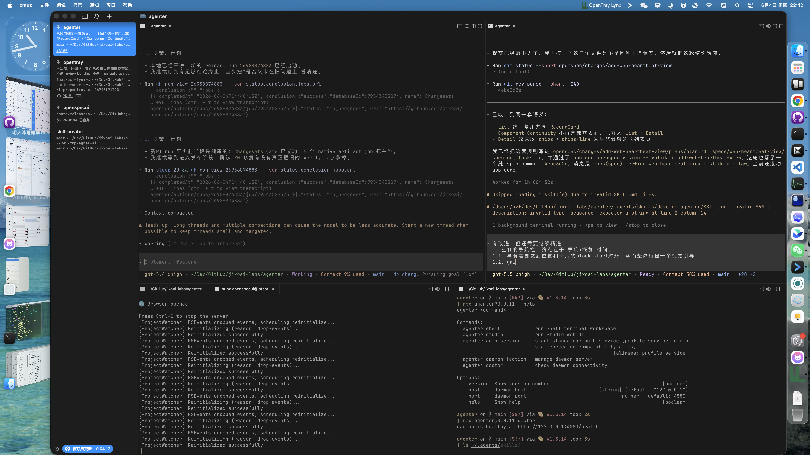

Tray Bounds API Review
Status: API law and automated verification passed. The remaining caveat is visual capture quality: the automation workspace produced protocol/log proof for the tray-launched WebView path, but not a clean screenshot of the panel itself.
Backend Authority
TrayHandle.getBounds() now behaves as a real broker-backed tray capability, including the socket-level local-broker path.
Page Projection
navigator.opentray.tray.getBounds() stays a page projection of tray authority, not a second geometry source.
Type Ergonomics
The facade now exports browser-global typings for the injected navigator/window surface and exposes the runtime invoke(...) escape hatch explicitly.
Scenario Guidance
Skills and README now teach effect-driven tray-panel composition instead of leaving tray bounds as an abstract inventory item.
Smoke Result
macOS smoke returned non-null tray bounds and emitted { type: "shown" } for the WebView panel.
Intent Trace
| Intent point | Evidence | Verdict |
|---|---|---|
| Tray bounds must be tray-owned backend authority. | packages/cli/src/client.ts, kernel/backend test pass set, and local-broker response routing fix. |
Pass |
Page JS should receive the same capability family under navigator.opentray.tray. |
packages/ext-webview/src/index.ts + ext-webview navigator tests. |
Pass |
| Skills should teach tray-launched custom panels with tray-aware placement. | .agents/skills/develop-opentray-ext/references/webview-window-patterns.md |
Pass |
| Human-visible smoke should prove the tray-launched panel path. | review/artifacts/daemon-tray-smoke.log proves non-null bounds and shown; screenshot capture is weaker. |
Partial |
Smoke Evidence
connected: endpoint=/Users/kzf/.opentray/0.4.0/opentray-p1.sock session=lease-1
space: {"spaceId":"com.example.opentray.daemon-smoke"}
tray: daemon-smoke-status
webview extension requested through the generic load-ext path
click the tray icon: macOS should direct-trigger the single primary action without opening a menu
tray bounds: {"x":0,"y":2520,"width":196,"height":0}
broker -> client {"type":"ext-event","spaceId":"com.example.opentray.daemon-smoke","trayId":"daemon-smoke-status","ext":"webview","data":{"type":"shown"}}
primary tray action: webview show
Full log: review/artifacts/daemon-tray-smoke.log
Auxiliary screenshot: review/artifacts/daemon-tray-smoke.png
Window-list capture during automation: review/artifacts/window-list.json
Screenshot Attempt

The screenshot records the desktop state during smoke, but does not isolate the accessory WebView panel cleanly. Treat the log and tray-bounds response as the stronger evidence in this automation context.
Verification Commands
cargo build -p opentray-bin -p opentray-ext-webview
cargo test -p opentray-spec -p opentray-core -p opentray-backend-tray-icon -p opentray-backend-ksni -p opentray-ext-webview
pnpm --filter @opentray/ext-webview test
pnpm --filter @opentray/ext-webview typecheck
pnpm --filter opentray test
pnpm --filter opentray typecheck
OPENTRAY_EXAMPLE_WEBVIEW_SMOKE=show OPENTRAY_EXAMPLE_EXIT_AFTER_MS=5000 OPENTRAY_BROKER_BIN="$PWD/target/debug/opentray" pnpm --filter opentray cli -- smoke daemon-tray
bun run openspec:vision -- validate add-tray-bounds-api
git diff --checkArchive remains deferred because this worktree currently carries multiple active OpenSpec changes. The tray-bounds change itself is reviewed; the branch integration boundary is the remaining packaging concern.